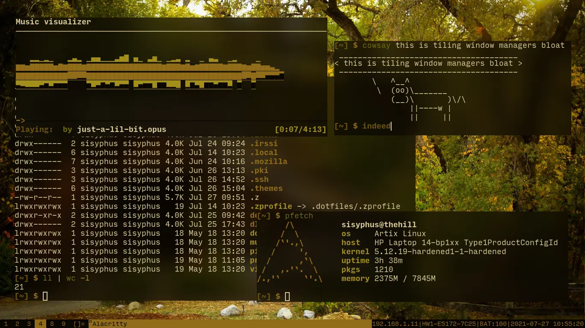
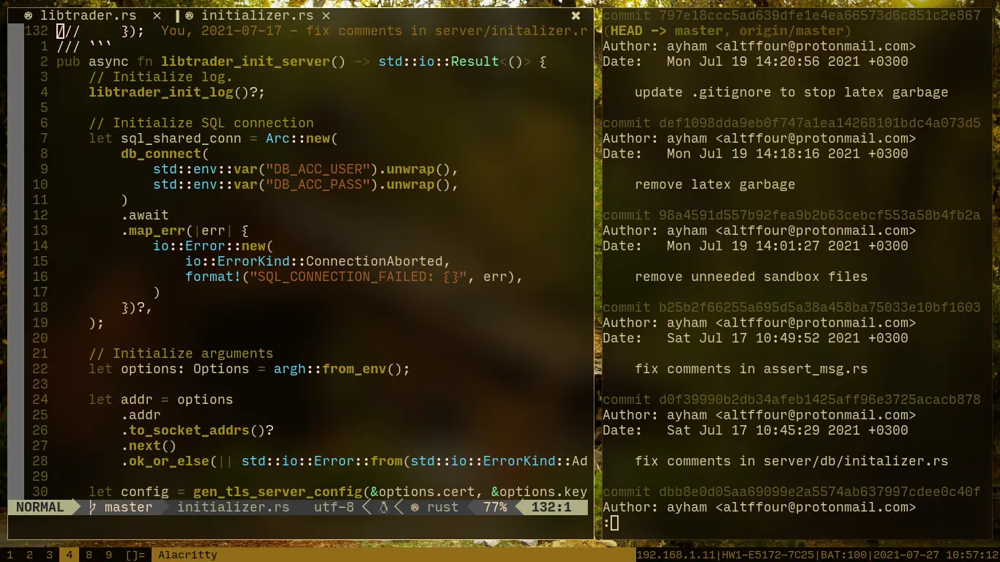
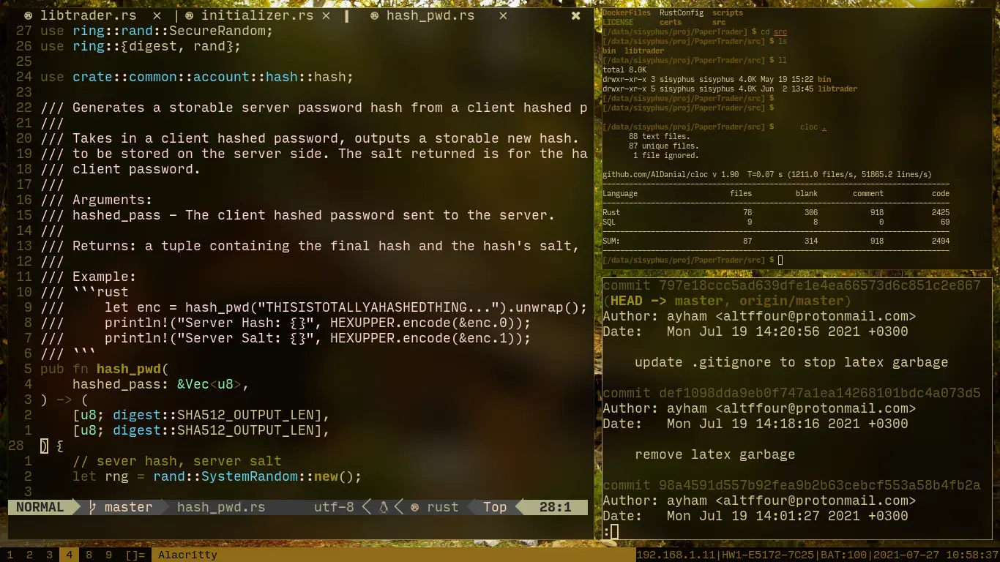
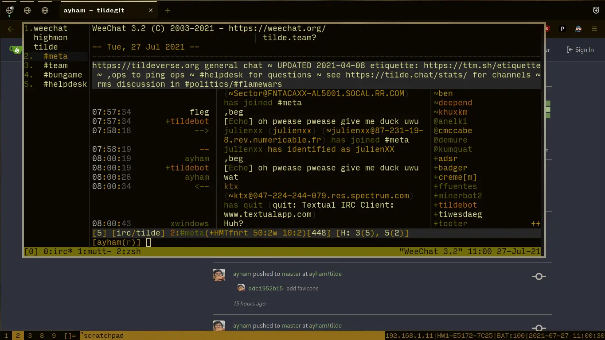

Workflow
Introduction
This is how I run my desktop. It is the only way any personal desktop should work based on my rationale. If you would like to recommend or comment on my setup contact me here.
Setup
I like to keep it suckless, ofcourse only when it makes sense to do so. The only systemd-less distro that is usable is Artix linux.
- dwm
- dmenu
- surf
- slock
- slstatus
…and for non-suckless stuff:
- alacritty
- firefox
- brave
- baku
- newsboat
- mpd & ncmpcpp
- bpytop
- neovim
- emacs
- pywal
- sxiv
- zathura
- thunar
Lastly, security (includes non-software):
- firejail
- apparmor
- hardened-linux kernel
- luks2 encrypted main partition (root,
- swap, data on lvm over luks)
- luks1 encrypted /boot parition
There are scripts I use for choosing startup application on login and organizing them into their specified workspaces, and scripts for searching the web, bookmarks; from the comfort of dwm & dmenu. Those scripts can be found here.
Screenshots
   